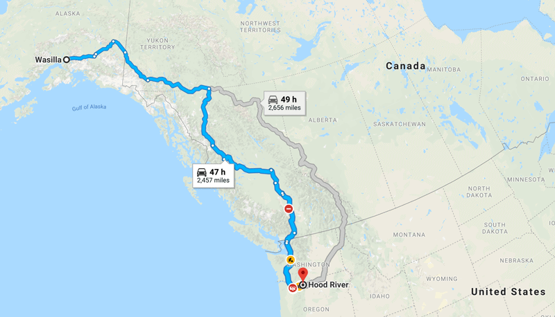
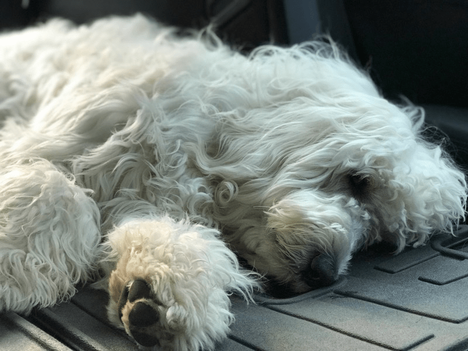

Life Update
It’s a cool, rainy evening here in Alaska and even though 9:00 pm has rolled around, as I write this the sky is as brilliant as a white Spring Lilly. I lived in Alaska for 28 years, and I am not sure if I ever adapted to the midnight sun. Whereas I enjoy the extended day, it plays havoc with my sleep patterns.
But this post isn’t about my frivolous ramblings of Alaska. I am not here for a vacation; I am here on a family emergency. My mother had a horrific fall and broke her humerus bone (the bone between the shoulder and elbow), and with my dad gone working, she was alone. I received the call late Thursday, and with what felt like a blink of my eye, I found myself on a plane heading to the Last Frontier to help my mother.

Bob is at home with Milo (our pup-pup for you newcomers) watching over the blender, food processor, and all the delicious ingredients that wait to be assembled into another masterpiece. :) I may get a recipe out this week, but I am not sure. With my chef hat hanging up back home and my caretaker’s hat on my head, I am here shower my mother with love and gentle care. With that being said, I might miss a week of sending out a recipe. Thank you for your understanding and patience.
I would like to ask that you hold my mom in a special place of thoughts and prayers. The doctors indicated that she will need surgery on Monday (plates and screws were in the conversation). Until you hear from me next… have a blessed and wonderful week. I will be back in touch. blessings, amie sue

It dawned on me that for those who are not part of the Nouveauraw Facebook group and/or don’t follow my public page… you may have never seen Milo. So I thought I would share a photo of our tired puppy, that I snapped on our drive to Portland as Bob took me to the airport.
© AmieSue.com